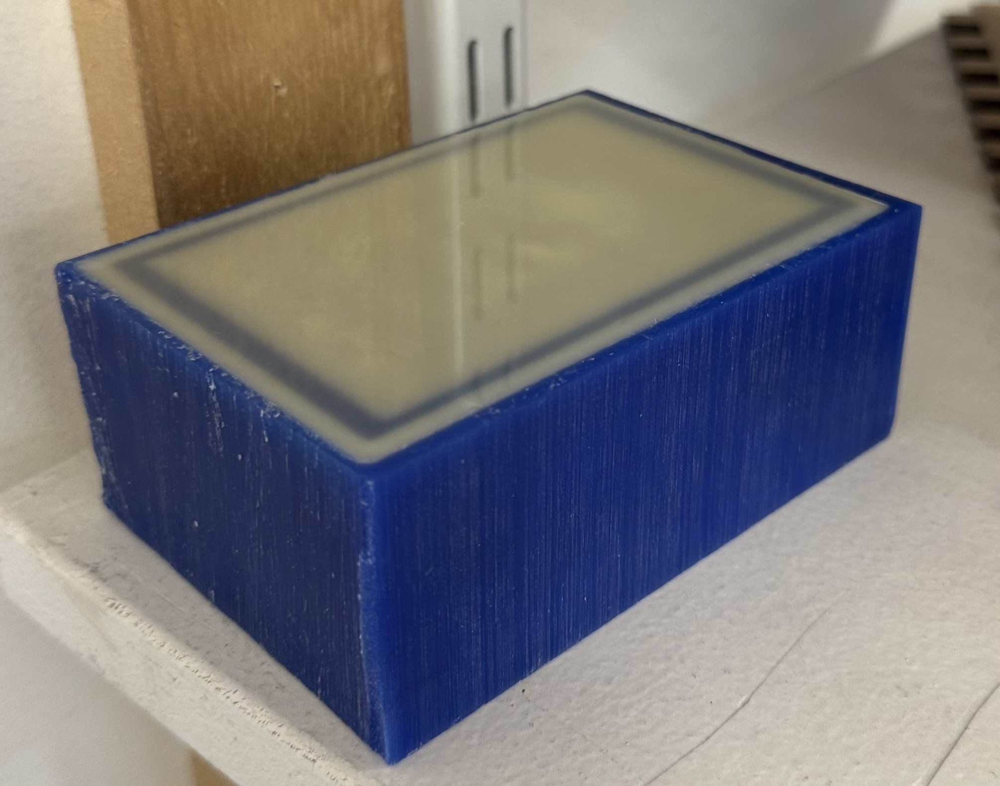
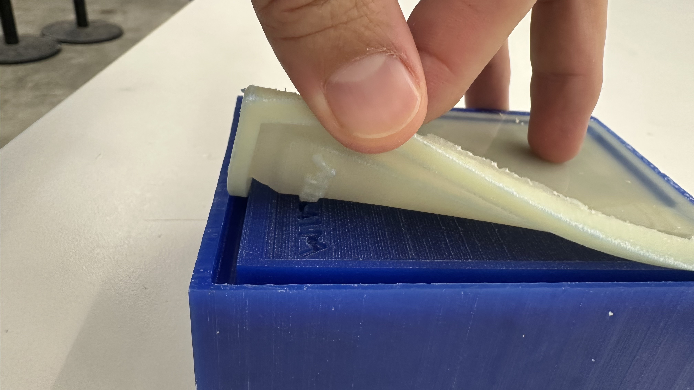
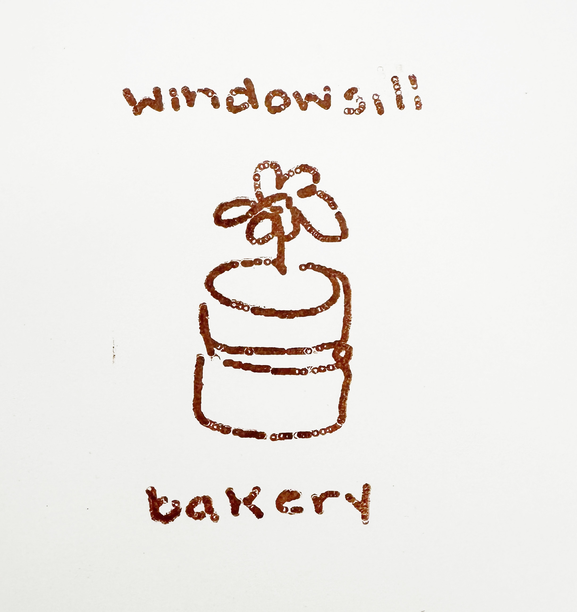

Week 8: CNC
Windowsill Stamp
My partner is a pastry chef, and she runs a small business called Windowsill Bakery. Yes, it is awesome to have a pastry chef partner.

I wanted to make her a stamp of her hand-drawn logo to put on her cake boxes for all of her custom orders. First I turned all of the logo's lines into paths using photoshop.
Logo in black and white
Logo as paths
My idea was to bring these paths into Blender and extrude them; but for a variety of reasons using paths was insanely complicated and very manual -- so I found a way to displace the surface of a plane according to the brightness of an image, and fed in the original logo. I planned to cut this design out of a block of wax, then pour silicone into it to create a stamp. So I built a frame around the logo plane to hold the "background" silicone.
CNCing took under an hour because I used two different sized drill bits -- a 1/8th inch to clear large amounts of material in the "rough" cut, and a 1/16th inch to do the letters. I had to trick the software into allowing me to use the 1/16th bit by pretending that it was a 1/32nd bit, or else it wouldn't carve into the letters because those areas were too narrow.
The final mold looked great, to my eyes at least! There were a couple areas that were too thin for the CNC to cut out, like at the top of the n and the b, so I used a scalpel to remove them manually.
I measured equal parts of the A and B liquids for a firm silicone material and poured it into the mold, tapping it hard to remove air bubbles which (from experience) always ruin molds like this with fine edges and sharp corners. I set the mold aside for 16 hours and let it cure. That's partially a lie -- of course I tested it after just an hour and got silicone all over my finger because I'm incredibly impatient.

The mold set beautifully, and was easy to remove from the wax. The details transferred perfectly -- maybe even too perfectly, as we'll see later.

I had to trim off the frame of the stamp, which was a biproduct of the way the CNC software cut out my design.
The first test stamp worked great! At first glance, at least -- on closer inspection, the CNC left little round artifacts all in throughout the mold! You can see the mark left by the 1/16th inch bit. I may try to gently sand those off the silicone with a very find sandpaper, but I'm not sure that this material can be sanded very effectively.

When you look very closely at the mold, you can see where the CNC made these tiny marks -- which are almost invisible to the eye, and only matter in the context of making a stamp which needs a completely flat plane as its marking surface.

This was an exciting project -- I'd been wanting to make a stamp for Windowsill for months but couldn't figure out the right workflow to do it!
Ojai Cheese Board
While we're making gifts for loved ones, I thought it would be fun to make a cheese board for my parents, who live in Ojai, California. They live on the edge of a mountain and the shape of the valley would be perfect for resting a little block of brie on.
I used an incredible online tool, Touch Terrain, to create an STL of their area. Here is the link to my exact map, in case you want to edit it yourself.
I used the ShopBot CNC to mill this one because it's bigger. My cheese board is actually quite small, because I realized that the mountains in Ojai are so tall that in order to keep them to scale while making the cheese board larger, I'd need to start with a significantly thicker block of wood.
The CNC took under 30 minutes because this thing rips. But the downside is that it's incredible imprecise at that speed (and bit size) so there were a bunch of artifacts. If they had been oriented the other direction, they could have been read as terrain lines; but because of the way the tool path was designed, they just look jagged.
I tried sanding it down manually, but it's difficult to sand inside the mountain's lumps without loosing all of the detail -- so ultimately I left it as is.
I bought some butcher block conditioner and applied it to the wood. This is oak, which isn't an ideal wood for this purpose because it has a large grain, but it's better than pine, which was the only other option at Home Depot. Note to self: lumber yards close early on fridays, but next time it's worth waiting until they reopen.

For the next iteration, I want to make this bigger, and use two different bits for the rough pass and final pass, to get smoother detail in the mountains. This is a sweet first prototype, though!